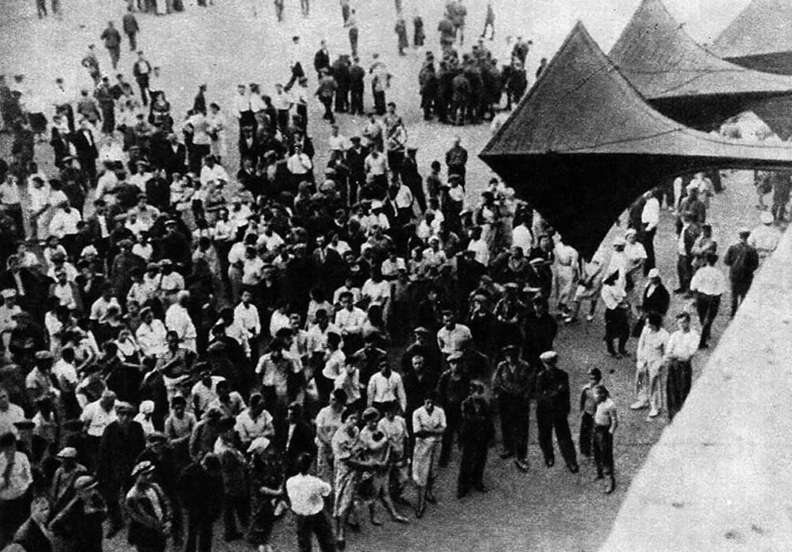

Основные экспозиции

Начало войны
Путь от предвоенного мира к первым дням самого кровопролитного конфликта.
Перейти в зал

Причины поражения советских войск на первом этапе войны
Почему начальный период войны оказался неудачным для СССР.
Перейти в зал